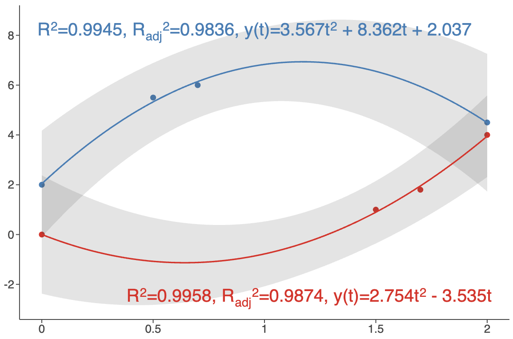
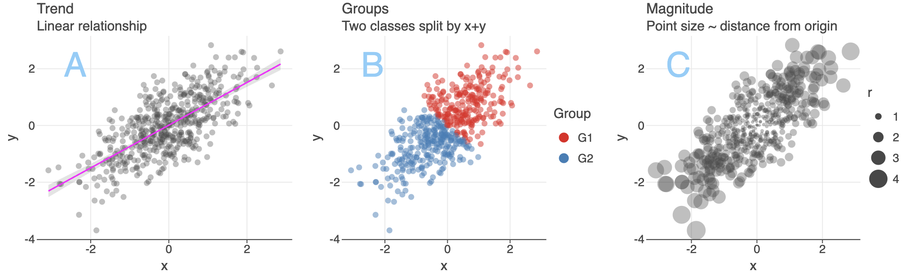
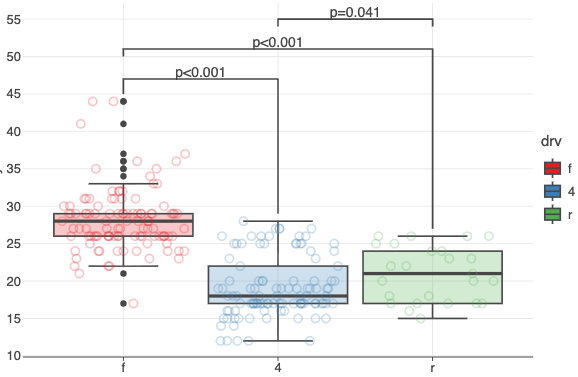
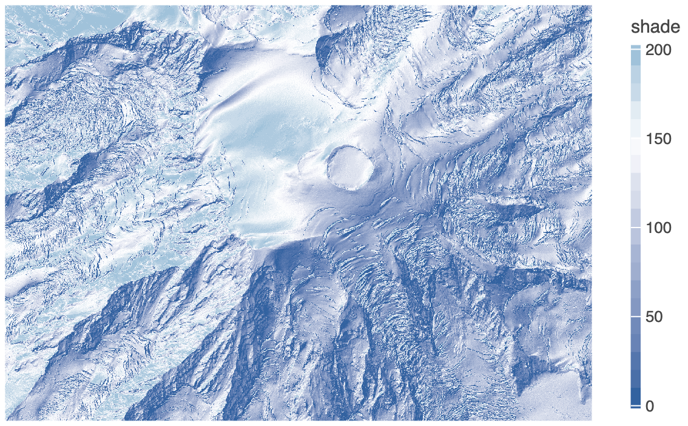

What Is New in 4.13.0
Kotlin: v2.2.20 (was v1.9.25).
Statistical Summaries Directly on
geomSmooth()Plot LayerThe
geomSmooth()layer now includes alabelsparameter designed to display statistical summaries of the fitted model directly on the plot. This parameter accepts asmoothLabels()object, which provides access to model-specific variables likeand the regression equation. 
See: example notebook.
Plot Tags
Plot tags are short labels attached to a plot.

See: example notebook and updated Plot Layout Diagrams.
New
geomBracket()andgeomBracketDodge()GeometriesNew geometries designed primarily for significance bars (p-values) annotations in categorical plots.

See: example notebook.
Custom Color Palettes in
geomImshow()The
cmapparameter now allows you to specify a list of hex color codes for visualizing grayscale images. Also, the newcguideparameter lets you customize the colorbar for grayscale images.
See: example notebook.
New
palette()Method in Color ScalesGenerates a list of hex color codes that can be used with
scaleColorManual()to maintain consistent colors across multiple plots.See: example notebook.
New
overflowparameter inscaleColorBrewer(),scaleFillBrewer()Controls how colors are generated when more colors are needed than the palette provides. Options:
'interpolate'('i'),'cycle'('c'),'generate'('g').See: example notebook.
New
breakWidthParameter in Positional ScalesSpecifies a fixed distance between axis breaks.
See examples:
Axis Minor Ticks Customization
The
axisMinorTicksandaxisMinorTicksLengthparameters intheme().See: example notebook.
Pan/Zoom in
gggrid()with Shared AxesPan/Zoom now propagates across subplots with shared axes (
sharex/sharey).See: example notebook.
And More
See CHANGELOG.md for a full list of changes.
Recent Updates in the Gallery


")


Changelog
See CHANGELOG.md for other changes and fixes.